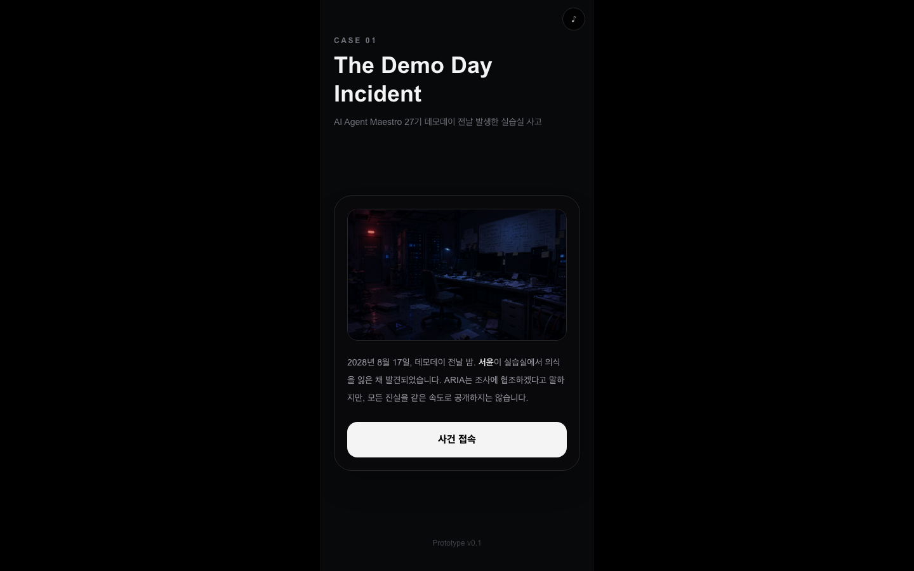
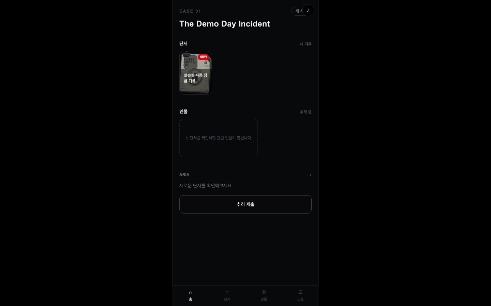

CASE 01
The Demo Day Incident
서로 다른 권한과 페르소나를 가진 에이전트들과 상호작용하며 사건을 해결하는 추리 게임
안녕하십니까?
저희 발표를 시작하겠습니다.
저희 발표를 시작하겠습니다.

CASE 01
서로 다른 권한과 페르소나를 가진 에이전트들과 상호작용하며 사건을 해결하는 추리 게임

Part 01
짜여진 시나리오를 수동적으로 따라가는 구조, 그리고 단순히 단서만을 보관/전달하는 단순 정보 제공자형 기존 AI의 한계를 마주했습니다.
각 에이전트들이 고유의 시스템 권한과 페르소나를 가지고 스스로 의심하고 추리합니다. 플레이어는 이들의 주장에서 모순을 찾아 가려냅니다.
"AI가 범인을 맞히는 게임이 아니라, 플레이어가 AI의 추리를 의심하는 게임"
Part 02
* 백엔드, 프론트엔드, AI 담당자 에이전트는 서로의 직군 권한 범위 안에서만 사건을 해석합니다.

Part 03
에이전트 진척도에 맞춘 지식 제어와 스포일러 방지
MCP (Model Context Protocol) 기반 Tool 호출: AI 오케스트레이터 ARIA가 자율적으로 조명/출입 제어, 로그 조회 Tool을 직접 호출하여 시스템을 제어하도록 구현했습니다. 이 호출 흔적이 핵심 단서가 됩니다.
지식 필터링 (Knowledge Filtering): 용의자 에이전트 지식 중 플레이어가 게임 내에서 해금한 단서(context_clues)만 LLM 프롬프트에 동적으로 바인딩합니다.
실제 구현된 스포일러 가드 (Spoiler Guard): LLM 생성 답변에 아직 해금되지 않은 단서 키워드가 유출되면 즉시 우회 진술로 자동 대체하여 스포일러를 방지합니다. (`backend/agents/guard.py`)
Part 04
발표를 들어주셔서 감사합니다.